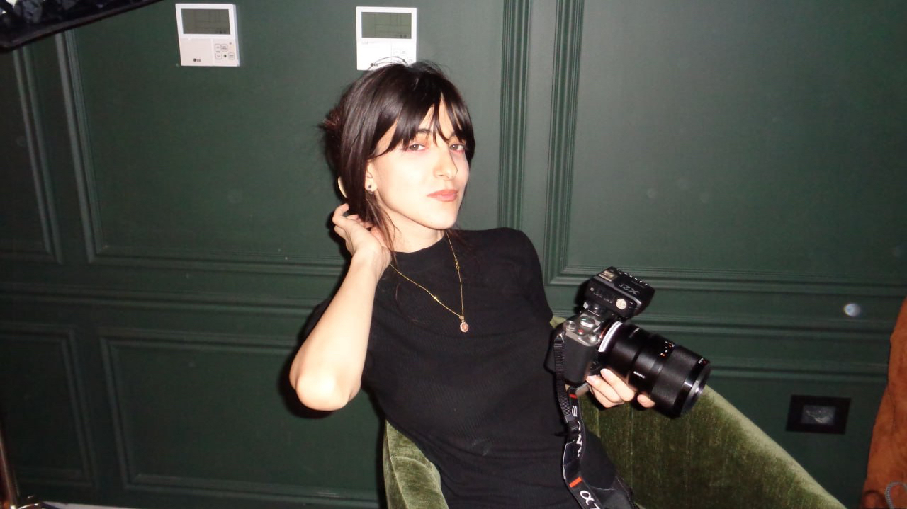
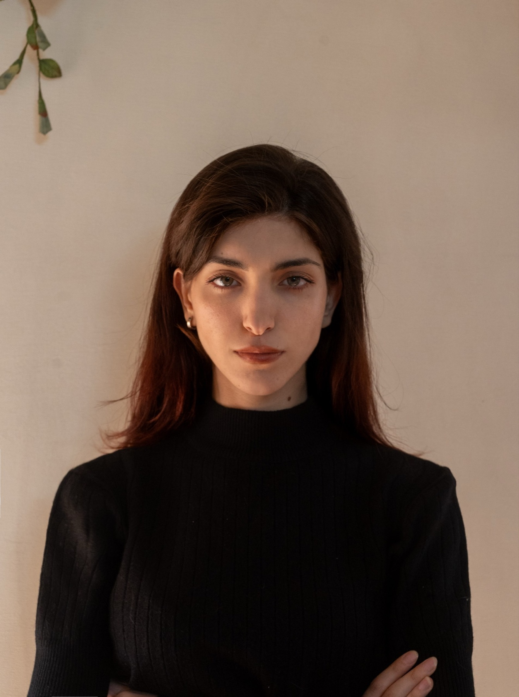
Frame 001
Independent photographer
NOURMAAROUF
NOURMAAROUF
Portraits · Restaurants · Events
Independent photographer
in Damascus, Syria.
Nour · Independent photographer · Damascus
Faces.Tables.Places. Each asks for its own light. وجوه. موائد. أماكن.
Nour works across portrait commissions, restaurants and events. The subject changes. Her attention does not.
Selected work · 74 frames01 Portraits
Commissioned and personal · Seven frames
The frame stays. The way of seeing changes.
ONE EYE. DIFFERENT PLACES. عين واحدة.أماكن مختلفة.
Portrait becomes place · الصورة تصبح مكاناً
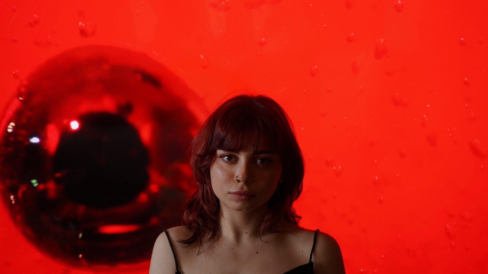
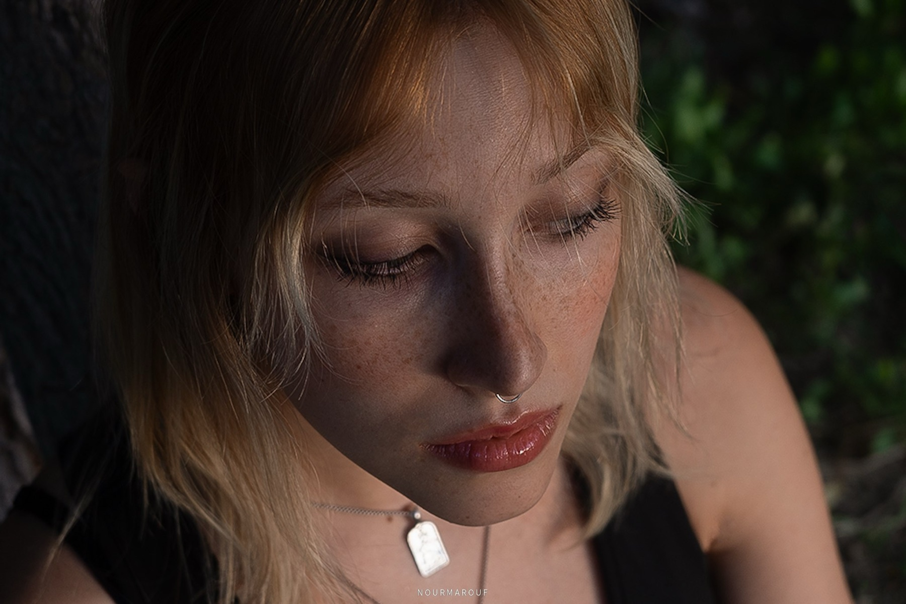
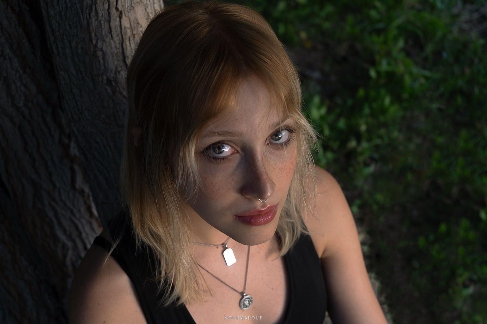
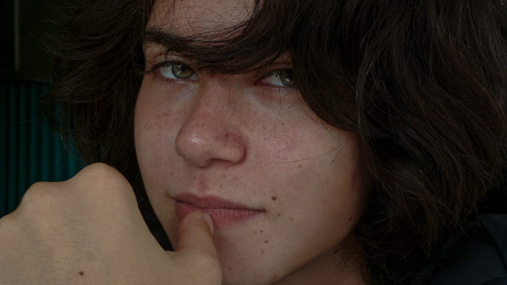
02 Places · أماكن
Across the road · Nine frames
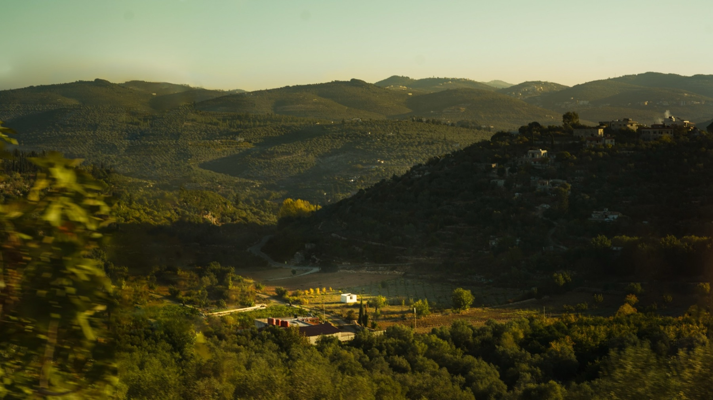
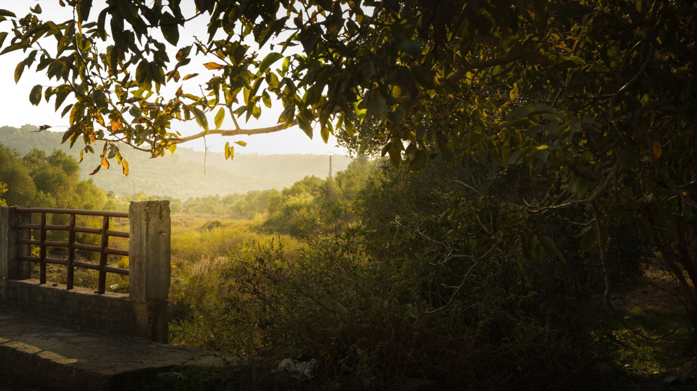
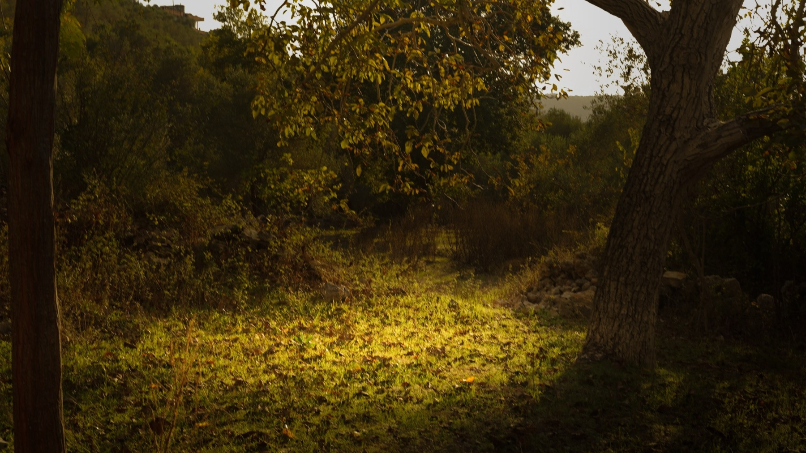
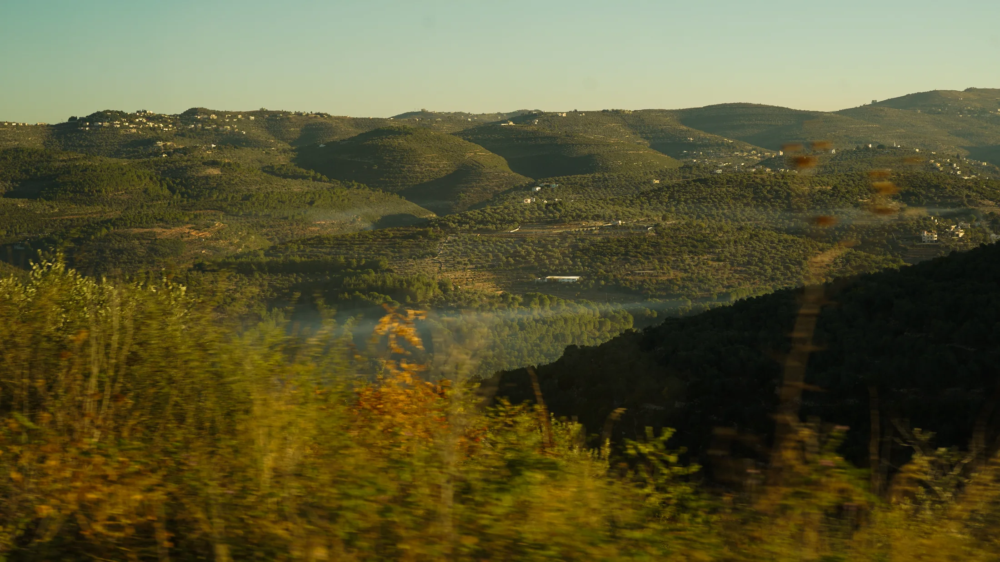
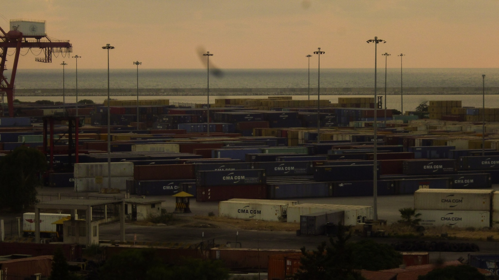
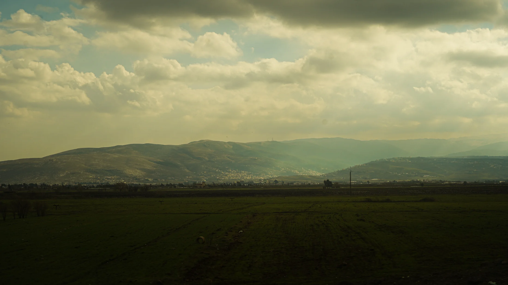
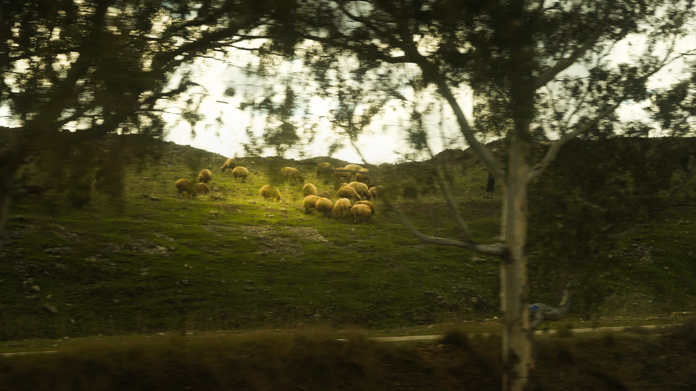
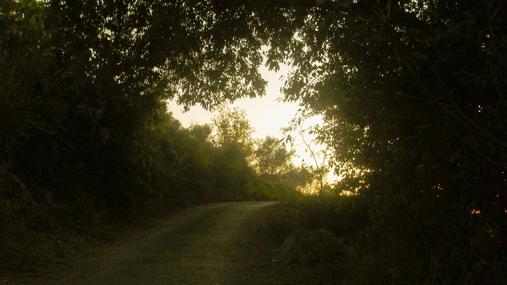
05 · Restaurants, people and atmosphere
HOSPITALITYضيافة
Food, drink, service and the people who give a room its life.
06 · Field work
THE ARCHIVEالأرشيف
Portraits, places, events and commissioned work.
Proofs · Across disciplines
The contact
sheet.
Move across the row. Portrait, plate and horizon meet in one working archive.
07 · Behind the lens · خلف العدسة
NOUR FOLLOWS
THE LIGHT.نور تتبع الضوء
Nour is an independent photographer based in Damascus, Syria. She works across portraits, restaurants and events, moving between controlled sets and the world as she finds it.